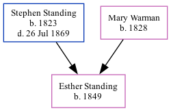

Esther Hannah Standing 1849 -
[ Home ] | [ Calendar ] | [ Surnames Index ] | [ Family History ]The child of Stephen Standing (a laborer) and Mary WarmanEsther Standing, the second cousin three-times-removed on the father's side of Nigel Horne, was born in Folkestone, Kent, England in 18491,2.
Throughout her life, she lived at Fancy Street in Folkestone on Mar 30, 18513, in 18611 and on Apr 7, 18612.
Parents
- Stephen was born in 1823
- Mary Ann was born in 1828
Citations
- 1861 England Census Online publication - Provo, UT, USA: The Generations Network, Inc., 2005.Original data - Census Returns of England and Wales, 1861. Kew, Surrey, England: The National Archives of the UK (TNA): Public Record Office (PRO), 1861. Data imaged from the National (Relation to Head of House: Daughter)
- 1861 England, Wales & Scotland Census - Findmypast (was age 12 and the daughter of the head of the household)
- 1851 England, Wales & Scotland Census - Findmypast (was age 3 and the daughter of the head of the household)
Media
1861 England, Wales & Scotland Census - GBC/1861/0003620799
Family Tree
Generated by ged2site. Last updated on Nov 13, 2024